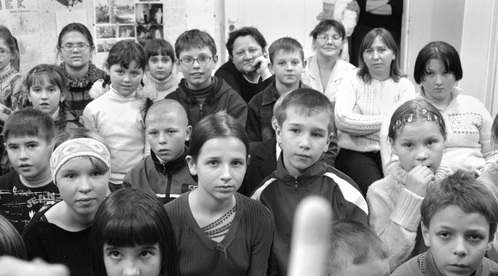

The Goal
We are walking for two charities:
The Tereza Maxova Foundation for abandoned and orphaned children in the Czech Republic and
Elim Sende, our friend Sarp’s foundation for inner city children in Istanbul.
Through her foundation, Tereza has been supporting abandoned and orphaned children in the Czech Republic for nearly twenty years. The foundation fills the gap between what the state provides and what the children need. They promote adoption and foster care programs, provide internships and interim housing for the kids that are forced to leave the institutions where they have grown up, and raise awareness of the plight of mothers in shelter homes who are fighting hard to keep their children with them, rather than having them forcibly taken away from them and placed in children’s homes.
It is tricky to pay compliments to ones life partner in public. Nevertheless, I must say that the commitment Tereza has shown to the cause of these children is a testament to the incredible human being that she is.
Sarp’s foundation is much younger and aims to support inner city kids with meager means to develop into well rounded adults by engaging them through extracurricularactivities in art, drama, dance, music, and culture. I have always thought that the establishment of this foundation by Sarp, who is a businessman like me,speaks volumes about the things that really matter in life. Helping out children in need is an incredible way of supporting ones community as well as society at large.
Please support these two charities and help us bring some purpose to our expedition. Children in both countries will be grateful for your help.